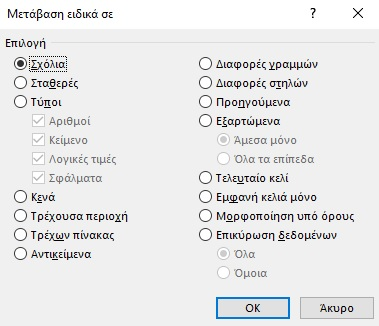

Με την εντολή "Μετάβαση σε" βρίσκουμε και επιλέγουμε γρήγορα όλα τα κελιά που περιέχουν συγκεκριμένους τύπους δεδομένων, όπως τύπους. Επίσης, χρησιμοποιούμε την επιλογή "Ειδική μετάβαση σε" για να βρούμε μόνο τα κελιά που πληρούν συγκεκριμένα κριτήρια, όπως το τελευταίο κελί στο φύλλο εργασίας που περιέχει δεδομένα ή μορφοποίηση.
Ακολουθούμε τα παρακάτω βήματα:
Αναζητούμε συγκεκριμένα κελιά σε ολόκληρο το φύλλο εργασίας, κάνοντας κλικ σε οποιοδήποτε κελί.
Αναζητούμε συγκεκριμένα κελιά μέσα σε μια καθορισμένη περιοχή, επιλέγοντας περιοχή, γραμμές ή στήλες που θέλουμε.
Για να ακυρώσουμε μια επιλογή κελιών, κάνουμε κλικ σε οποιοδήποτε κελί μέσα στο φύλλο εργασίας.
Στην "Κεντρική" καρτέλα, κάνουμε κλικ στην επιλογή "Εύρεση & Επιλογή" > "Μετάβαση" (στην ομάδα "Επεξεργασία").
Συντόμευση πληκτρολογίου: Πατάμε το συνδυασμό πλήκτρων CTRL+G.
Αν κάνουμε κλικ στο επιλογή Μετάβαση ειδικά σε:
Στο παράθυρο διαλόγου "Μετάβαση ειδικά σε", κάνουμε κλικ σε μία από τις παρακάτω επιλογές.
